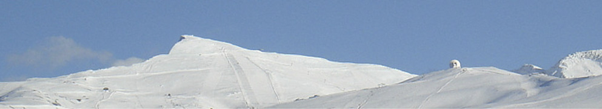
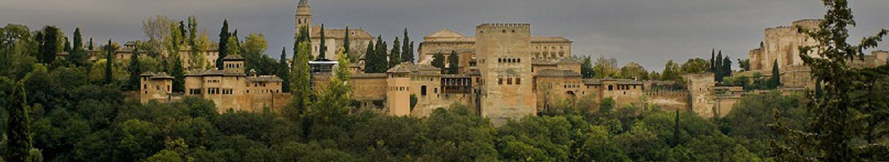
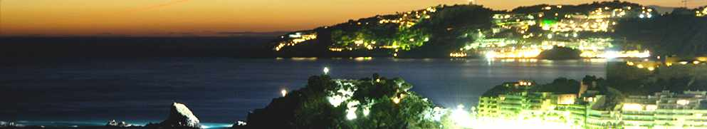
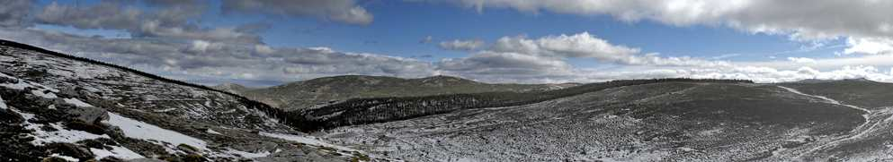

Listado de actividades propuestas
- 
Subida a Sierra Nevada
Sierra Nevada es uno de los grandes atractivos de Granada. Ofrece unas vistas incomparables del paisaje de la región.
- 
Visita a la Alhambra
La Alhambra es una ciudad palatina andalusí situada en Granada, España. Es un rico complejo palaciego y fortaleza (alcázar o al-qasr القصر) que alojaba al monarca y a la corte del Reino nazarí de Granada. Su verdadero atractivo, como en otras obras musulmanas de la época, no sólo radica en los interiores, cuya decoración está entre las cumbres del arte andalusí, sino también en su localización y adaptación, generando un paisaje nuevo pero totalmente integrado con la naturaleza preexistente. En 2011 se convirtió en el monumento más visitado de España, recibiendo la cifra histórica de 2 310 764 visitantes.
- 
Bajada a la playa
Almuñécar cuenta con diecinueve kilómetros de costa en la que destacan quince playas: la mayoría constan de todos los servicios; destacan las playas de Velilla, San Cristóbal y La Herradura, que ostentan el galardón de Q de calidad, máxima distinción del ICTE. Existen además típicas calas recónditas de la costa de Andalucía Oriental, e incluso playas nudistas. En ellas se practican actividades acuáticas como el submarinismo o la pesca, siendo el paraje de Cerro Gordo-Maro uno de los principales atractivos turísticos del municipio debido a su belleza y conservación. Es habitual celebrar a lo largo de la costa sexitana la festividad de San Juan, en la que el bollo de aceite homónimo, el fuego y los buenos deseos son protagonistas de una noche mágica.
- 
Excursión a la Sierra de Baza
El Parque Natural de la Sierra de Baza está situado al nordeste de la provincia de Granada, limitando con la provincia de Almería y formando con los relieves de las Sierras de Filabres la continuación hacia el este de las cordillera béticas. Ubicado en un entorno semiárido de la Hoya de Baza, y caracterizado por unas precipitaciones escasas y de distribución irregular, se eleva el macizo montañoso de la Sierra de Baza hasta superar los 2.200 msnm, siendo el Calar de Santa Bárbara con 2.269 msnm la cumbre de este Parque Natural, que fue declarado espacio natural protegido por la Ley 2/1989, de 18 de julio, por la que se aprueba el Inventario de Espacios Naturales Protegidos de Andalucía y se establecen medidas adicionales para su protección, contando con una extensión total de 53.649 ha, distribuida entre los términos municipales de Baza, Dólar, Gor, Caniles y Valle de Zalabí.